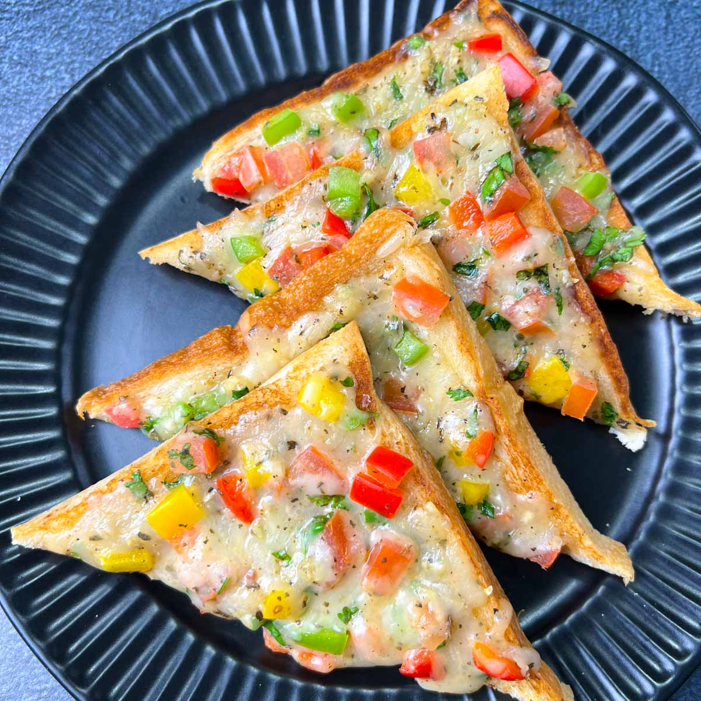

Cheese Toast

Description
Veg Chilli Cheese Toast, is a quick breakfast or snack recipe made from
cheese, chilies, and some veggies spread on top.
This is an Indian version of the Cheese Chili Toast made on Tawa. Oven and
Air Fryer Instructions are also included.
Ingredients
- Bread
- Cheese
- Seasoning
- Garlic
- Veggies
- Butter
Steps
- Finely chop/dice the vegetables and herbs.
-
Combine the cheese, vegetables, and spices in a mixing bowl. Keep aside.
- Toast the bread with butter on one side only.
- Spread chili cheese mixture on the toasted bread side.
-
Heat the iron Tawa on medium-low heat. Spread some butter and place the
bread slice. Cover the glass lid and cook on the low flame until the bread
is toasted well and the cheese has melted (It takes 4-5 minutes).
- Cut it into your desired shape and serve.